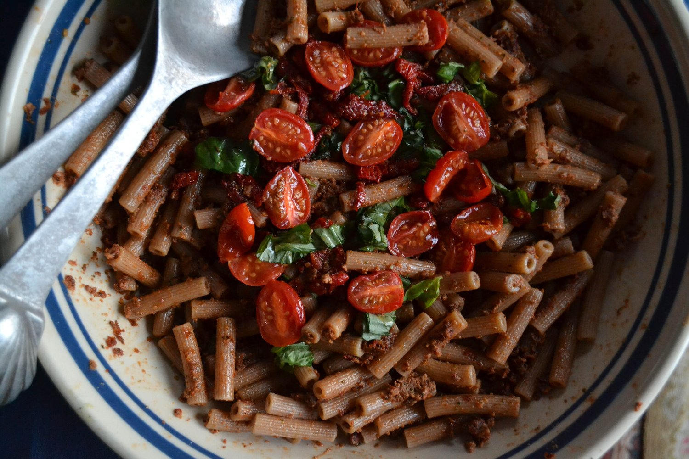
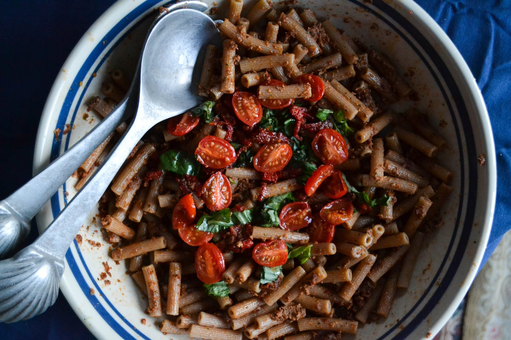

Sun-dried Tomato Pesto Pasta


Good afternoon, friends! Or evening, crack of dawn, whenever you're reading - internet maaaagic. Today there's a super special post! I've collaborated with Izzy (writer behind veganizzm.com) and she's shared this fantastic Sun-dried Tomato Pesto Pasta recipe with us all.
I connected with Izzy as I delved deeper into plant-based eating and recipe development, and I was instantly a fan of hers. First of all, her recipes help me compensate for my lack of savory skills. Big time. They're so richly flavorful, yet not absurdly complex or tedious. The photography is gorgeous, too. But second of all, Izzy is such a genuinely kind, yet goofy person. My kinda person! I really encourage you to check out some of her blog posts and recipes; I think you'd enjoy them.
I've shared a new recipe over on her site, so check that out while you're there! I am in awe of this tomato pesto pasta recipe. I feel like I can smell it from here, is that weird? I'm not the biggest fan of tomatoes, but sun-dried tomatoes? That's a whole nother ball game. Gimme them all. Not to mention, my puppy's name is Pesto, so obviously I love this recipe without even trying it. This will definitely be made this month in my house! Will you be making it? Yes. You mean yes, yes you will.
I'll stop talking and leave the rest of the post to Izzy; enjoy guys!
Sun-dried Tomato Pesto Pasta
-
12 oz whole wheat or other pasta of choice
-
1 cup chopped walnuts
-
1 cup packed basil leaves + 1/3 cup for garnish
-
1 tablespoon nutritional yeast
-
1/2 teaspoon salt
-
1 cup sun-dried tomatoes packed in oil
-
1/2 cup fresh cherry tomatoes, halved
-
olive oil
-
1 clove garlic
-
1 lemon
Preheat the oven to 350 F.
Cook the pasta according to package instructions. Drain and set aside.
Place the halved cherry tomatoes and 1 clove of garlic on a foil-lined baking sheet and toss with 1-2 tablespoons olive oil and salt. Bake at 350 F for 10-12 minutes. Remove and set aside.
Meanwhile, heat a medium skillet and pour in the walnuts; toast them until lightly golden. Transfer the walnuts to a food processor and pulse for 10-20 seconds. Add the basil and sun-dried tomato (plus the olive oil from the jar) and pulse until the mixture is smooth.
Mix the pesto mixture with the pasta. Top with the roasted tomatoes, basil, and juice of the lemon. Mix to combine and season with salt to taste. Serve hot or room temperature.
My name is Izzy and I write Veganizzm, a vegan food blog that’s intended to fill your belly and make you laugh. Kim and I are blogger friends who've connected over a shared love of desserts and plant-based eating. You can find me online here (hop on over and say hi!) : www.veganizzm.com
instagram: https://www.instagram.com/veganizzm/
facebook: https://www.facebook.com/veganizzm
twitter: https://twitter.com/veganizzm